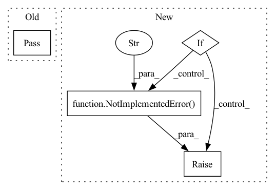

Pattern ID :11924
Before Change
class TrainOneStepWithGradientClipping(object):
def __init__(self):
pass
def __call__(self, data, label):
passAfter Change
class TrainOneStepWithGradientClipping(object):
def __init__(self, net_with_loss, optimizer, train_weights, gradient_clipping=tlx.ops.ClipByGlobalNorm(0.1)):
if gradient_clipping is None:
raise Exception("This method must input the gradient clipping function, eg tlx.ops.ClipByGlobalNorm(0.1).")
if tlx.BACKEND == "tensorflow":
self.net_weith_train = TrainOneStepWithGradientClippingTF(net_with_loss, optimizer, train_weights, gradient_clipping)
elif tlx.BACKEND == "paddle":
self.net_weith_train = TrainOneStepWithGradientClippingPD(net_with_loss, optimizer, train_weights, gradient_clipping)
elif tlx.BACKEND == "torch":
self.net_weith_train = TrainOneStepWithGradientClippingTH(net_with_loss, optimizer, train_weights, gradient_clipping)
else:
raise NotImplementedError("This backend is not supported" )
def __call__(self, data, label):
loss = self.net_weith_train(data, label)
return lossIn pattern: SUPERPATTERN
Frequency: 3
Non-data size: 4
Instances Fragment ID: 40188301
Project Name: tensorlayer/tensorlayerx
Commit Name: af8396d394e14c142b86d940f600b1b65748de3e
Time: 2022-03-09
Author: laicheng_vip@163.com
File Name: tensorlayerx/model/core.py
M Class Name: TrainOneStepWithGradientClipping
N Class Name: TrainOneStepWithGradientClipping
M Method Name: __init__(5)
N Method Name: __init__(1)
M Parent Class: object
N Parent Class: object
M File Name: tensorlayerx/model/core.py
N File Name: tensorlayerx/model/core.py
M Start Line: 568
M End Line: 569
N Start Line: 569
N End Line: 582
Before Change
// TODO: Instantiate a TransformedDistribution class
pass
def forward(self, x):
Abstract method to compute forward transformation.After Change
Returns the distribution formed by passing dist through the bijection
// If the input is a distribution then return transformed distribution
if isinstance(x, torch.distributions.Distribution):
raise NotImplementedError("Transforms of distributions not yet implemented!" )
// TODO: Handle other types of inputs such as tensors
else:
raise TypeError(f"Bijector called with invalid type: {type(x)}") Fragment ID: 40188299
Project Name: stefanwebb/flowtorch-old
Commit Name: e4079dbb2a386ee2e066721087d5ed9e2dc984fc
Time: 2020-12-09
Author: info@stefanwebb.me
File Name: simplex/bijector.py
M Class Name: Bijector
N Class Name: Bijector
M Method Name: __call__(2)
N Method Name: __call__(2)
M Parent Class: object
N Parent Class: object
M File Name: simplex/bijector.py
N File Name: simplex/bijector.py
M Start Line: 20
M End Line: 20
N Start Line: 23
N End Line: 30
Before Change
class MatMul(object):
def __init__(self, transpose_a=False, transpose_b=False, name=None):
pass
self.transpose_a = transpose_a
self.transpose_b = transpose_b
self.name = name
After Change
self.transpose_a = transpose_a
self.transpose_b = transpose_b
self.name = name
if self.transpose_a or self.transpose_b:
raise NotImplementedError("keyword argument `transpose_a` or `transpose_b` is not supported." )
def forward(self, x, y):
return flow.matmul(x, y)
Fragment ID: 40188298
Project Name: tensorlayer/tensorlayerx
Commit Name: cc37a2d56d6136f09bd6a12d5a04b80e0ecd75a2
Time: 2022-11-02
Author: laicheng_VIP@163.com
File Name: tensorlayerx/backend/ops/oneflow_backend.py
M Class Name: MatMul
N Class Name: MatMul
M Method Name: __init__(4)
N Method Name: __init__(4)
M Parent Class: object
N Parent Class: object
M File Name: tensorlayerx/backend/ops/oneflow_backend.py
N File Name: tensorlayerx/backend/ops/oneflow_backend.py
M Start Line: 398
M End Line: 398
N Start Line: 395
N End Line: 401